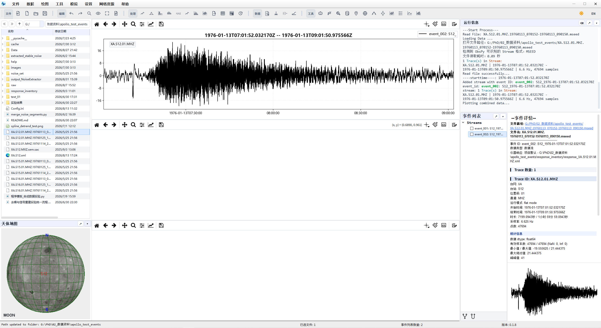
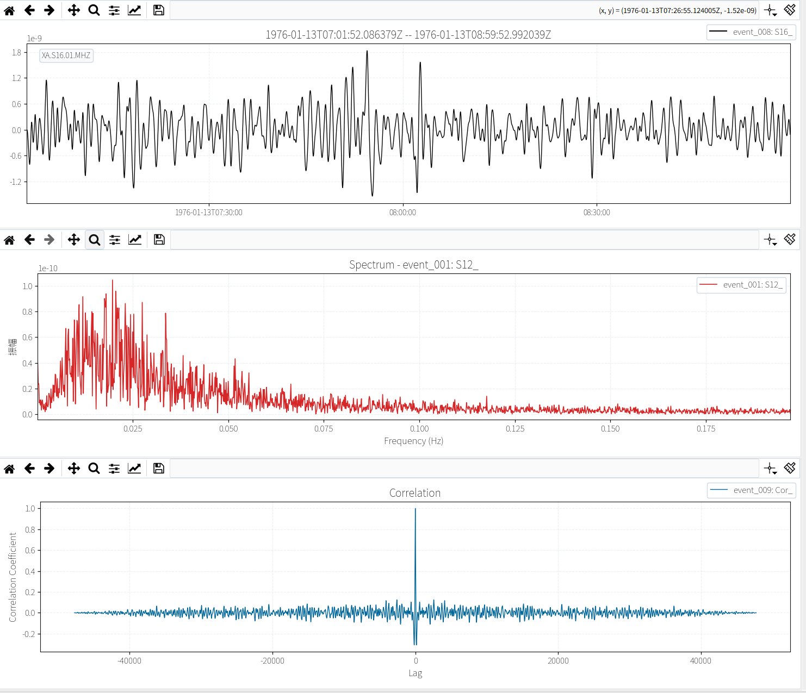
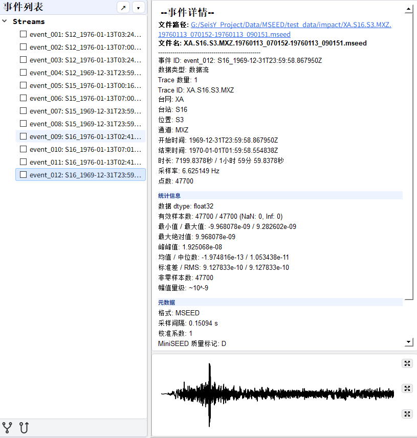
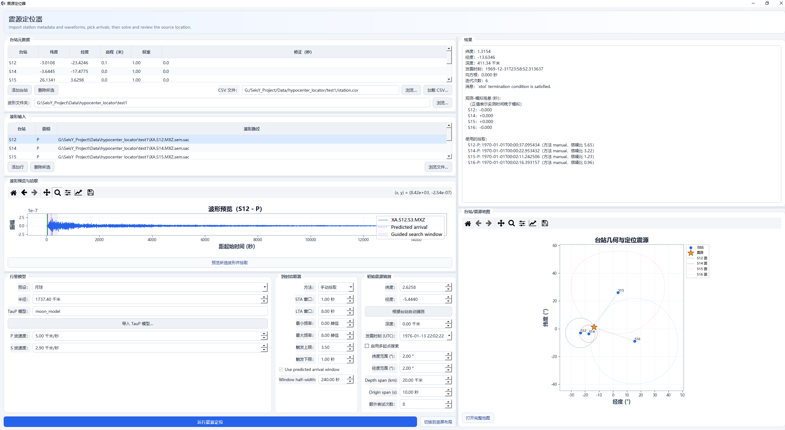
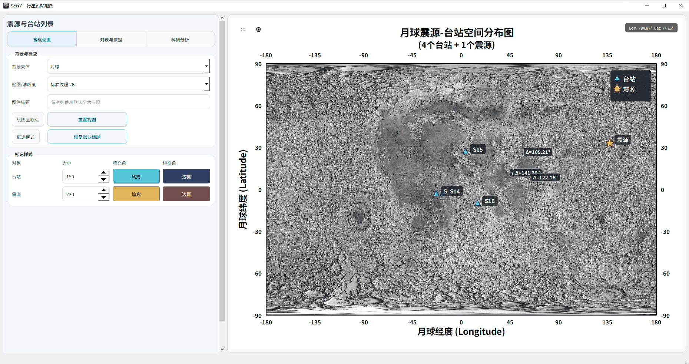
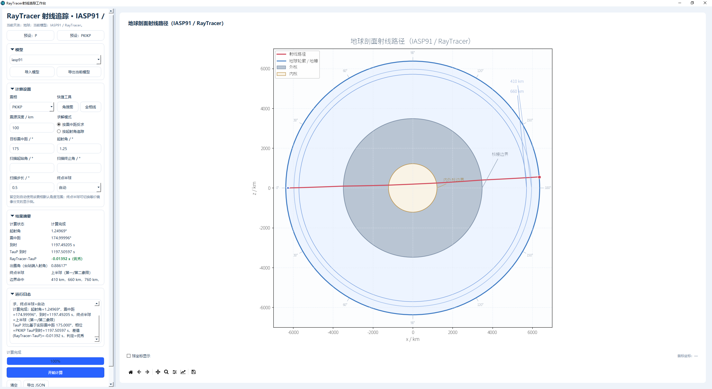
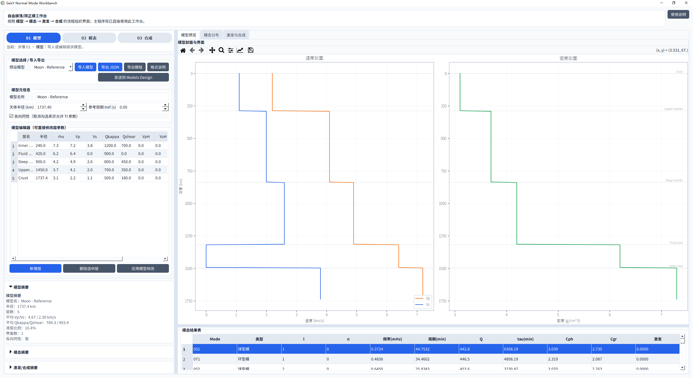
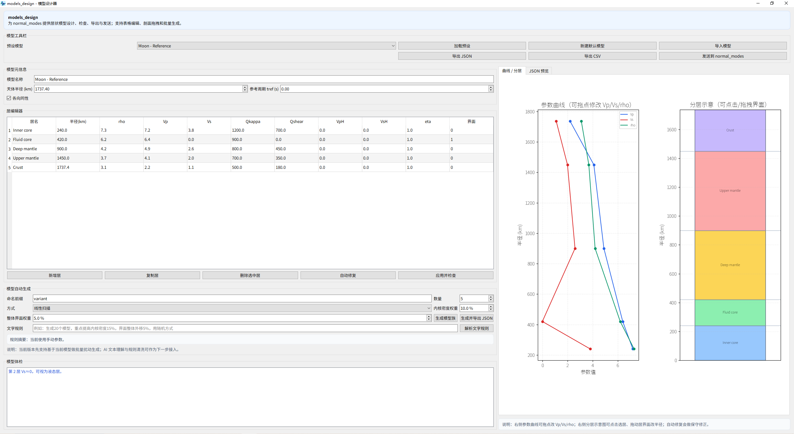
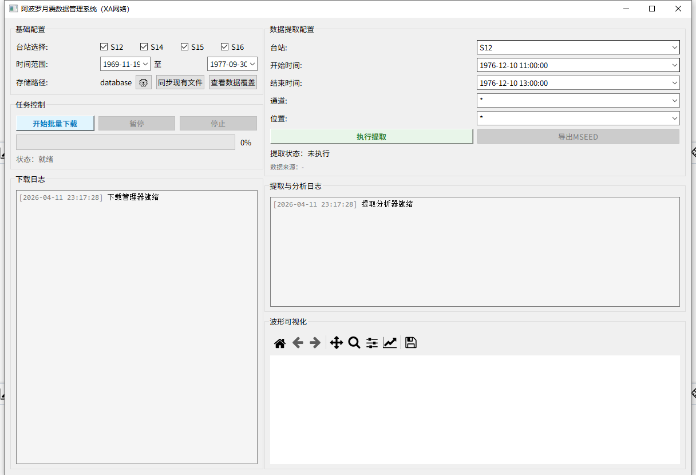

SeisY 行星地震综合分析平台
面向地震、月震与行星地震研究的数据处理、分析与模拟工具集。

主界面：左侧资源管理与球体区，中部三块绘图区，右侧终端与事件列表。软件概览
SeisY 是一个综合性的地震、月震与行星地震数据处理和模拟分析平台。
基础数据工作
支持 8 种数据格式导入（MiniSEED、SAC、SEG-Y、SEG2、ASCII、TXT、CSV 及自动检测），工作目录浏览、项目保存与载入、文件树管理、日志显示和内置命令终端。
波形与频谱处理
支持去均值、去趋势、去响应、10 种插值方法、6 种加窗函数、带通 / 中值滤波、归一化、去脉冲、频谱分析、滑动相关及多事件对比等 20 余种处理操作。
行星地震工具链
集成震源定位器、行星台站地图、射线追踪工作台、简正模工作台、模型设计器、月震工作流、PDDM 去噪、噪声提取器、ULF 信号重构器和 Apollo 月震系统。
主界面布局
网页中的布局说明已统一改写为中文，并与当前软件界面结构保持一致。
左侧资源管理区
- 浏览工作目录与文件树
- 支持排序、右键菜单和多选
- 用于导入数据、打开脚本与配置文件
- 下方连接球体区 / 地图区
左下地图区 / 球体区
- 基于 OpenGL 的天体可视化区域
- 支持地球、月球、火星等球体显示
- 可与台站、震源、路径和贴图显示联动
- 适合行星地震几何关系的直观展示
中间三块绘图区
canvas_topcanvas_midcanvas_bottom- 用于波形、频谱、多事件对比及处理前后展示
右侧终端与事件列表
- 右上：日志与内置命令终端
- 右下左：事件列表
- 右下右：事件详情与附加显示区域
- 底部状态栏显示路径、已选数、事件数和版本
绘图区示意

事件列表区域示意

工具栏
工具栏负责把高频操作直接放到主窗口顶部，减少菜单层级切换。主工具栏位于窗口顶部，底部工具栏位于事件列表区域。
主工具栏（5 组，共 22 个按钮）
第一组 · 文件操作
- 导入：导入波形数据文件
- 打开：用编辑器打开文件
- 打开文件夹：浏览工作目录（Ctrl+K）
- 保存：保存当前数据（Ctrl+S）
第二组 · 通用工具
- 撤销 / 重做：操作历史回退（Ctrl+Z / Ctrl+Y）
- 查找：搜索功能（Ctrl+F）
- 视图：切换显示模式与布局
- 帮助：打开用户指南（F1）
- 设置：软件设置面板
- 导出：导出数据（Ctrl+E）
- 转换：频谱类型切换（F5）
- 全屏：全屏模式切换（F11）
- 日志：显示运行日志
第三组 · 信号处理
- 插值：缺失值线性插值
- 滤波：带通 / 低通滤波
- 去脉冲：异常脉冲去除与绘图
- 分段去异常：交互式分段异常去除
- 去均值：去除直流偏移
- 样条：样条去趋势
- 绘制频谱：绘制振幅谱
- 绘制时频图：时域 + 频域联合显示
- 导出频谱：将频谱数据导出为文件
- 发送到简正模工作台：将频谱发送至简正模分析
- 频谱分析查看器：完整的频谱分析工具
- 数据查看器：查看波形道的详细信息与头段
第四组 · 配置与外部资源
- 修改配置：编辑软件参数配置
- 输入日期：设置数据时间范围
- 下载地震数据：通过 FDSN 协议下载波形
- STA/LTA：经典 STA/LTA 震相拾取器
- Wilber 3：打开 IRIS Wilber 事件搜索
- Gmap：打开 IRIS GMap 台站地图
- SAGE：打开 IRIS DMC 工具页面
- 台站列表：打开本地台站列表文件
- 地学网站：打开常用地学网站合集
第五组 · 专业模块快捷入口
- SeisRT：在线实时地震工具
- Apollo 系统：Apollo 月震数据管理
- 震源定位器：震源反演定位窗口
- 行星台站地图：台站与震源可视化管理
- 射线追踪工作台：射线路径与走时分析
- 月震工作流：月震反演多步骤流程
- 简正模工作台：自由振荡与简正模分析
- 模型设计器：分层地球 / 行星模型设计
- 噪声提取器：自动地震噪声提取
- PDDM：相依去噪方法
底部工具栏（事件列表区域）
事件相关性分析
- 互相关：两个事件之间的互相关计算
- 自相关：单个事件的自相关计算
专业工具矩阵
把“工具”和“模拟”中的核心模块集中呈现，便于快速理解 SeisY 的能力范围。
震源定位器
台站、波形、拾取、模型、结果与地图一体化定位窗口。

行星台站地图
用于台站 / 震源管理、震中距计算、到时预测与导出。

射线追踪工作台
用于射线路径和起射角搜索。

简正模工作台
执行简正模计算、模态分析、观测谱对照与合成。

模型设计器
1D / 准 1D 模型设计器，是简正模模块的上游工具。

Apollo 系统
用于 Apollo 月震数据的批量下载、提取与可视化。

项目文件结构
项目格式为 .seisyproj，由旧手册与当前代码结构共同确认。
manifest.json
- app / version
- saved_at
- operation_count
- dataset_events
state.pkl
- global_config
- seismic_config
- dataset
- undo / operation_history
- current_event_id / selected_event_ids
- 界面与状态快照
事件列表
事件列表是 SeisY 中最关键的数据对象管理工作区之一。
常见分组
- 数据流
- 相关性数据
- 噪声数据
- 阵列数据
- 自定义分组
常用右键能力
- 分组事件
- 计算 / 更多 子菜单
- 复制事件ID / 复制事件 / 粘贴事件
- 删除事件 / 撤销事件 / 重做事件
推荐流程
以下流程用于帮助首次使用者快速建立处理思路。
常规数据处理
- 使用“导入文件”导入波形数据。
- 在事件列表中选中目标事件。
- 依次执行去均值、去趋势、滤波和去除仪器响应。
- 使用绘制当前数据流查看波形。
- 使用“绘制振幅谱”查看频谱。
- 使用“保存数据”或“保存项目”保存结果。
行星地震模拟
- 先用模型设计器设计模型。
- 发送到简正模工作台。
- 计算模态并查看结果。
- 使用行星台站地图配置台站与震源。
- 必要时使用射线追踪工作台分析传播路径。
科学计算与公式索引
本节把 SeisY 中涉及科学计算的核心模块按“代码入口 → 计算逻辑 → 关键公式 → 结果含义”组织起来，便于展示、检索与查阅。
检索与目录
支持按模块名、公式术语、中英文别名与代码关键词实时过滤。0. 科学计算总览与代码索引
SeisY 当前最具方法代表性的模块包括 数据预处理与频谱分析、Hypocenter Locator、RayTracer 和 Normal Mode Workbench。其中 seisy/core/normal_modes.py 已形成“模型 → 模态 → 激发 → 合成 → 观测匹配”的完整链条。
- 频谱 / PSD：
seisy/core/processing.py、seisy/tools/spectrum_analysis.py、seisy/tools/power_spectrum.py - 震源定位：
seisy/core/hypocenter_locator.py - 射线追踪：
seisy/core/raytracer.py - 简正模：
seisy/core/normal_modes.py - 月震流程 / PDDM / SWI / 合成记录：
seisy/core/lunar_pipeline.py、seisy/core/PDDM.py、seisy/core/SWI.py、seisy/core/SeismicSynthesizer.py
1. 数据预处理 / 频谱 / PSD
对应代码：seisy/core/processing.py、seisy/tools/spectrum_analysis.py、seisy/tools/power_spectrum.py
- 异常值稳定化：先处理
NaN / +Inf / -Inf，保证归一化、滤波与 FFT 输入有限。 - Min-Max 归一化：\( x'=(x-x_{\min})/(x_{\max}-x_{\min}) \)；若 \( x_{\max}=x_{\min} \)，则该道置零。
- 离散傅里叶变换：\( X[k]=\sum_{n=0}^{N-1} x[n]e^{-i2\pi kn/N} \)；频率轴为 \( f_k = kf_s/N \)。
- 双边谱与功率谱密度：\( A_2(f)=|X(f)|/N \)，\( PSD_2(f)=|X(f)|^2/(f_sN) \)。
- Welch 平均：分段、加窗、逐段 FFT 后平均，以降低方差并改善 PSD 稳定性。
- Parseval 背景：时域平方和与频域平方和对应，因此 PSD 比单纯振幅谱更适合解释能量分布。
- SNR：既支持功率型 \( 10\log_{10}(P_s/P_n) \)，也支持 RMS 比值型定义。
2. hypocenter_locator.py：球面几何、走时与加权最小二乘
对应代码：seisy/core/hypocenter_locator.py
- 大圆距离：先用 Haversine 计算台站与震源的中心角 \( \Delta \)，再转换为震中距。
- 理论走时：优先调用 TauP；回退近似时采用 \( L_{arc}=R\Delta \)、\( L=\sqrt{L_{arc}^2+h^2} \)、\( t=L/v \)。
- 反演参数：\( m=(lat,lon,depth,t_0) \)。
- 残差函数：\( r_i=w_i\,[t_{obs}-(t_0+t_{calc}+c_i)] \)，其中
w_i为综合权重，c_i为台站改正。 - 不确定性近似：输出 RMS 残差，并以 \( (J^\mathsf{T}J)^{-1} \) 作为协方差近似。
3. raytracer.py：分层速度模型、路径积分与目标震中距反求
对应代码：seisy/core/raytracer.py
- 层内速度模型：常写成 \( v(r)=a+bx+cx^2+dx^3,\ x=r/R \) 的半径归一化多项式。
- 正演模式：给定起射角，逐层推进并累计走时、震中距、出射角与路径点。
- 反求模式：扫描并细化起射角，使理论震中距逼近目标值。
- 连续介质表达：物理背景可写成 \( T=\int ds/v(r) \)；射线参数常写作 \( p\sim r\sin i / v(r) \)。
4. normal_modes.py I：模型准备、模态枚举、频率估计、Q 与阻尼
对应代码：seisy/core/normal_modes.py
- 模型对象：
PlanetaryModel维护半径、密度、Vp、Vs、qkappa、qshear等分层参数。 - 模态枚举：按角阶数
l、径向阶数n与模态类型（spheroidal / toroidal / radial）生成候选模态。 - Toroidal 频率：近似满足 \( f \propto V_s\sqrt{l(l+1)}/(2\pi R) \)。
- Spheroidal 频率：近似满足 \( f \propto V_{eff}\sqrt{l(l+1)}/(2\pi R) \)。
- Radial 频率：近似满足 \( f \propto V_p/R \)。
- Q 与阻尼时间：先由
qkappa、qshear合成模态 Q，再用 \( \tau = Q/(\pi f) \) 转成阻尼时间。
5. normal_modes.py II：特征函数、震源激发与台站响应合成
- 特征函数：在归一化半径 \( x=r/R \) 上构造振型；Toroidal 近似可写作 \( x^l\sin((n+1)\pi x) \)。
- 密度缩放：振型再乘 \( \sqrt{\rho(r)} \)，用于体现能量权重趋势。
- 有限震源时窗：代码采用高斯型抑制项 \( \exp(-(2\pi fT)^2/8) \)。
- 台站响应合成：按阻尼振荡叠加 \( u(t)=\sum_m W_m e^{-t/\tau_m}\sin(2\pi f_m t+\phi_m) \)。
6. normal_modes.py III：观测谱峰检测、理论匹配与精确球贝塞尔求根
- 峰值检测：基于
scipy.signal.find_peaks()，结合背景分位数与动态显著性阈值。 - 自适应容差：匹配容差由理论模态局部频率间距与观测峰频共同决定，而非固定常数。
- 精确求解器：
ExactNormalModeSolver用球贝塞尔边界条件求根，例如 Toroidal 满足 \( j_l'(x)+j_l(x)/x=0 \)。 - 根到频率：若根为 \( x_n \)，则频率按 \( f=vx_n/(2\pi R) \) 换算，并用
brentq搜索。 - 求解原理分层：当前代码实际包含两套思路：
NormalModeCalculator做半经验频率估算；ExactNormalModeSolver做均匀球边界条件求根。 - 近似求解并不严格：
_estimate_frequency()更接近 \( f \sim \frac{v_{eff}}{2\pi R}\times \text{degree term}\times \text{radial factor}\times \text{structure factor} \) 这样的经验估计，而不是完整弹性球本征值方程求解。 - 均匀球根求解的起点：若取均匀球近似，则径向解可写成 \( u(r)\propto j_l(kr) \)，其中 \( k=\omega/v \)，并令 \( x=kR=\omega R/v \)。
- 当前代码中的边界条件：Toroidal 为 \( j_l'(x)+j_l(x)/x=0 \)；Radial 为 \( j_0'(x)=0 \)；当前简化的 Spheroidal 为 \( j_l'(x)+2j_l(x)/x=0 \)。
- 根到频率的严格映射：由 \( x_n=\omega_n R/v \) 与 \( \omega_n=2\pi f_n \) 可得 \( f_n=vx_n/(2\pi R) \)。
- 数值求根逻辑：
_find_roots()先扫描自变量区间；若边界函数满足 \( F(x_k)F(x_{k+1})<0 \)，说明区间内存在根，再调用brentq求解 \( F(x_n)=0 \)。
7. 月震流程 / PDDM / SWI / 合成地震记录
- 月震流程：默认质量筛选使用 \( \mathrm{SNR}=\mathrm{RMS}(signal)/\mathrm{RMS}(noise) \)；叠加重建采用 \( \bar{x}(t)=\frac{1}{N}\sum_i x_i(t) \)。
- PDDM：在频域中使用 \( F_{re}=(F_{s2s1}-F_{s2n1})/(F_{s2}^{*}+\varepsilon) \) 进行反卷积式恢复。
- SWI：当前是“前向频散 + 加权失配 + 平滑约束 + L-BFGS-B 优化”的反演骨架。
- 合成记录：Ricker 子波采用 \( w(t)=(1-2\pi^2f_0^2t^2)e^{-\pi^2f_0^2t^2} \)，并显式检查 Nyquist 条件。
文档依据
本页内容基于你的原手册初稿、当前代码结构以及 seisy_zh_CN.ts 翻译文件整理而成。
SeisY Planetary Seismology Integrated Analysis Platform
A toolkit for data processing, analysis, and simulation in seismology, moonquake studies, and planetary seismology.
Overview
SeisY is an integrated platform for seismic, moonquake, and planetary seismology data processing and simulation analysis.
Core data operations
Import 8 data formats (MiniSEED, SAC, SEG-Y, SEG2, ASCII, TXT, CSV, and auto-detect), browse working directories, save and reopen projects, manage file trees, and monitor logs with an embedded terminal.
Waveform and spectrum processing
Over 20 processing operations including De-mean, Detrend, response removal, 10 interpolation methods, 6 window functions, bandpass/median filtering, normalization, de-pulse, spectral analysis, sliding correlation, and multi-event comparison.
Planetary seismology workflow
Integrates Hypocenter Locator, Planetary Station Map, RayTracer, Normal Mode Workbench, Models Design, Moonquake Workflow, PDDM denoising, Noise Extractor, ULF signal reconstructor, and Apollo System.
Main layout
All explanatory text is fully switched to English in this mode, while keeping menu names consistent with the software.
Left resource manager
- Browse the working directory and file tree
- Supports sorting, context menus, and multi-selection
- Used for importing data and opening scripts or config files
- Connected to the globe / map area below
Map / globe area
- OpenGL-based planetary visualization area
- Displays Earth, Moon, Mars, and other bodies
- Works with stations, sources, paths, and textures
- Useful for geometric interpretation in planetary seismology
Three central plot panels
canvas_topcanvas_midcanvas_bottom- Used for waveforms, spectra, comparisons, and before/after processing display
Right terminal and event list
- Top right: log output and embedded command terminal
- Bottom left: event list
- Bottom right: event details and auxiliary display area
- Status bar shows path, selection count, event count, and version
Plot area
Event list area
Toolbar
The toolbar places high-frequency actions directly in the main window for faster operation. The main toolbar sits at the top; a secondary toolbar appears in the event list area.
Main Toolbar (5 groups, 22 buttons)
Group 1 · File Operations
- Import: import waveform data files
- Open: open a file in the editor
- Open Folder: browse the working directory (Ctrl+K)
- Save: save current data (Ctrl+S)
Group 2 · General Tools
- Undo / Redo: operation history (Ctrl+Z / Ctrl+Y)
- Find: search functionality (Ctrl+F)
- View: switch display modes and layouts
- Help: open the user guide (F1)
- Settings: software settings panel
- Export: export data (Ctrl+E)
- Convert: toggle spectrum type (F5)
- Fullscreen: toggle fullscreen mode (F11)
- Log: show runtime log
Group 3 · Signal Processing
- Interpolation: linear interpolation of missing values
- Filtering: bandpass / lowpass filtering
- De-pulse: spike removal with plotting
- Segment De-pulse: interactive segment-based outlier removal
- De-mean: remove DC offset
- Spline: spline detrending
- Plot Spectrum: plot amplitude spectrum
- Plot T & F: time-domain + frequency-domain combined display
- Export Spectrum: export spectrum data to file
- Send to Mode Workbench: send spectrum to normal-mode analysis
- Spectrum Analyzer Viewer: full spectrum analysis tool
- Data Viewer: inspect trace headers and details
Group 4 · Configuration & External Resources
- Modify Configurations: edit software parameters
- Input Date: set data time range
- Download Seismic Data: download waveforms via FDSN
- STA/LTA: classic STA/LTA phase picker
- Wilber 3: open IRIS Wilber event search
- Gmap: open IRIS GMap station map
- SAGE: open IRIS DMC tools page
- Seisnet List: open local station list file
- Geoscience Websites: curated collection of geoscience links
Group 5 · Specialized Module Shortcuts
- SeisRT: online real-time seismic tool
- Apollo System: Apollo moonquake data management
- Hypocenter Locator: source inversion location window
- Planetary Station Map: station and source visualization
- RayTracer: ray-path and travel-time analysis
- Moonquake Workflow: multi-step moonquake inversion pipeline
- Normal Mode Workbench: free-oscillation and normal-mode analysis
- Models Design: layered Earth/planet model designer
- Noise Extractor: automated seismic noise extraction
- PDDM: Phase-Dependent Denoising Method
Bottom Toolbar (Event List Area)
Event Correlation Analysis
- Cross Correlation: cross-correlation between two events
- Auto Correlation: autocorrelation of a single event
Tool matrix
A condensed view of the most distinctive tools under Tools and Simulation.
Hypocenter Locator
Integrated location window for stations, waveforms, picks, models, results, and maps.
Planetary Station Map
Station/source management, epicentral distance calculation, travel-time prediction, and export.
RayTracer
Workbench for ray-path and takeoff-angle search.
Normal Mode Workbench
Normal-mode computation, modal analysis, observed spectrum comparison, and synthesis.
Models Design
1D / quasi-1D model designer used upstream of normal-mode analysis.
Apollo System
Batch download, extraction, and visualization of Apollo moonquake data.
Project structure
The .seisyproj structure is summarized from both your draft manual and the current codebase.
manifest.json
- app / version
- saved_at
- operation_count
- dataset_events
state.pkl
- global_config
- seismic_config
- dataset
- undo / operation_history
- current_event_id / selected_event_ids
- UI and state snapshot
Event list
The event list is one of the most important object-management workspaces in SeisY.
Common groups
- Streams
- Correlation Data
- Noise Data
- Array Data
- Custom groups
Typical context-menu actions
- Group Events
- Cal / More submenu
- Copy Event ID / Copy Event / Paste Event
- Delete Event / Undo Event / Redo Event
Recommended workflow
These workflows help first-time users get started quickly.
General data processing
- Use Import File to load waveform data.
- Select the target event in the event list.
- Apply De-mean, Detrend, Filtering, and Remove Response in sequence.
- Use Plot Current Stream to inspect the waveform.
- Use Plot Amplitude Spectrum to inspect the spectrum.
- Save the result with Save Data or Save Project.
Planetary seismology simulation
- Design a model in Models Design.
- Send the model to Normal Mode Workbench.
- Compute modes and review the results.
- Configure stations and sources in Planetary Station Map.
- Use RayTracer if propagation-path analysis is needed.
Scientific Computation Index
This section maps SeisY's main computational modules to formulas, processing logic, code entry points, and searchable notes.
Search and jump
Search works on module names, formulas, aliases, and code-oriented keywords.0. Overview and code map
The strongest methodology-oriented modules in SeisY are FFT / PSD analysis, Hypocenter Locator, RayTracer, and Normal Mode Workbench, especially the model-to-observation loop in seisy/core/normal_modes.py.
1. Processing, FFT, spectra, and PSD
- Per-trace min-max normalization uses \( x'=(x-x_{\min})/(x_{\max}-x_{\min}) \).
- The spectral core is the DFT \( X[k]=\sum_{n=0}^{N-1}x[n]e^{-i2\pi kn/N} \).
- PSD is formed as \( |X(f)|^2/(f_sN) \), with Welch averaging used for variance reduction.
2. Hypocenter location
- Travel times come from TauP when available, with a homogeneous fallback path model.
- The inversion minimizes weighted residuals \( r_i=w_i[t_{obs}-(t_0+t_{calc}+c_i)] \).
- Outputs include RMS residuals and an approximate covariance from \( (J^\mathsf{T}J)^{-1} \).
3. Ray tracing
- Layer velocities are represented by polynomial radial models.
- SeisY supports both fixed-takeoff-angle forward tracing and target-distance inverse search.
- The continuous background can be interpreted as \( T=\int ds/v(r) \).
4. Normal Modes I: models, frequency, Q, damping
- Characteristic frequency estimates follow mode-family-dependent radius and velocity scaling.
- Damping follows \( \tau = Q/(\pi f) \).
5. Normal Modes II: eigenfunctions, excitation, synthesis
- Eigenfunctions are built on normalized radius \( x=r/R \) and density-scaled by \( \sqrt{\rho(r)} \).
- Finite-duration suppression uses \( \exp(-(2\pi fT)^2/8) \).
- Station response is synthesized as \( u(t)=\sum_m W_m e^{-t/\tau_m}\sin(2\pi f_m t+\phi_m) \).
6. Normal Modes III: observed-spectrum matching and exact root solving
- The exact solver uses spherical-Bessel boundary conditions, for example \( j_l'(x)+j_l(x)/x=0 \).
- Roots are converted to frequencies through \( f=vx_n/(2\pi R) \).
7. Lunar pipeline, PDDM, SWI, and synthetic seismograms
- The lunar workflow uses RMS-style SNR \( \mathrm{SNR}=\mathrm{RMS}(signal)/\mathrm{RMS}(noise) \) and aligned stacking \( \bar{x}(t)=N^{-1}\sum_i x_i(t) \).
- PDDM uses frequency-domain recovery \( F_{re}=(F_{s2s1}-F_{s2n1})/(F_{s2}^{*}+\varepsilon) \).
- The synthesizer uses the Ricker wavelet \( w(t)=(1-2\pi^2f_0^2t^2)e^{-\pi^2f_0^2t^2} \).
References
This page is compiled from your draft manual, the current codebase, and the translation mapping in seisy_zh_CN.ts.